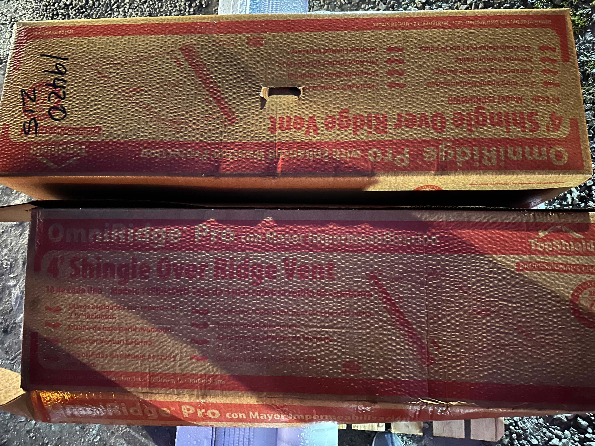

This is a prefabricated metal flashing intended for installation along the eaves and rake edges of all roof decks.
Which of the following is primarily used for Intake Ventilation? (select all that apply).
Which of the following products can be used to exhaust an attic space?
If we are venting a cathedral ceiling without a ridge, what would be the best product option for intake and exhaust?
Select all of the areas that we would install Step Cards.
Which of the following types of skylight comes with its own flashing kit from the manufacturer?
What are the color options that we warehouse for coil metal?
Which of the following are roof decking options that we warehouse?
What is the only material that we cannot pick up from the vendor?
What shingle type could be used in our Ultimate Package?
In order for the crew to get paid, what photos must the Project Manager submit?
About how many squares does one box of coil nails cover?
___ bundle(s) of shingles covers ___ roofing squares.
Select all that apply: Which underlayment(s) can be used for facets whose pitch is between 0.5 and 3?
If an attic already has perfectly installed baffles along every rafter bay in the attic space, we do not need to install our baffles.
When it comes to valley protection, _____ is the underlayment in the ____ package.
This product improves the circulation of air in the attic space.
What is the correct way to secure deck air to the roof?
You're walking back to your van after signing the invoice with the homeowner. Before you leave, the homeowner asks you about when the dumpster will get picked up. What do you tell the homewoner?
Which of the following packages use the same type of shingle?
Let's say a homeonwer needs us to repitch a facet. How much will this cost?
How are additional 1x6 boards charged to the homeowner?
If 8 linear feet of fascia needs to be replaced, how much extra will this cost the homeowner?
What underlayment is used on a 3/12 facet?
What underlayment is exclusively used on a 2/12 pitch?
How far from the seam of a shingle should a nail be placed?
How much further is Generic Ice and Water shield extended from an interior wall?
How long is the warranty on a flat roof?
How long is the warranty on a partial?
What photos are required when the roof is open?
What is the minimum pitch to install deck air?
Base sheet is installed with _____ inches overlap at seams and _____ inches overlap vertically.
What underlayment is used for a roof with pitch less than 2/12?
How many nails should we see through each cap shingle?
When rolling out base sheet over a roof that has a pitch change, how far up should the base sheet be rolled over the transition?
How wide is the board cut for Deck Air?
How far should Deck Air be from the edge of the roof?
Ridge vent is a continuous exhaust?
Vented Edge is a continuous intake?
Deck Air is a continuous intake?
How many feet of Ice and Water Shield from the eave is standard within all of contracts?
On a steep roof project, what are the two types of fall protection that we use?
What are the 4 types of underlayment used on our projects (excluding valleys)?
What are the 5 types of underlayment used in valleys?
What type of underlayment is used in a dead valley?
What are 3 types of exhaust ventilation?
Select all options that are suitable for a 2/12 pitch slope on a home?
How far does our roofing material need to extend past the eaves/rakes?
When wrapping a shingle up a valley, how far does the shingle need to extend past the valley?